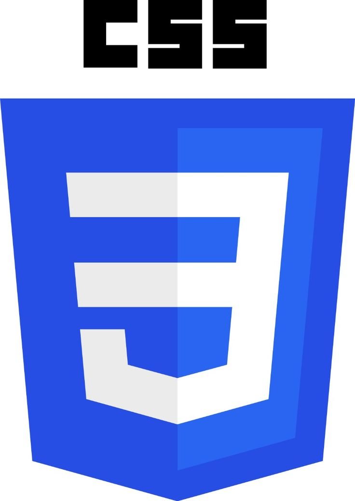

Hola, soy Andres Gutierrez
Actualmente me estoy formando como Desarrollador de Software en RIWI, combinando mi experiencia previa como Técnico en Mantenimiento de Equipos de Cómputo y Redes con nuevas habilidades en programación y lógica algorítmica.
Tengo conocimientos en JavaScript, HTML5, CSS3 y Python, los cuales he aplicado en proyectos como sistemas CRUD de inventario y gestión de estudiantes, calculadoras científicas y desarrollo de interfaces web funcionales e intuitivas.
Mi objetivo es seguir creciendo profesionalmente, crear soluciones eficientes y escalables, y mantenerme en aprendizaje continuo dentro del sector tecnológico.
ContactameTecnologias usadas


Proyectos
Python
Calculadora Cientifica
Aplicacion para realizar operaciones matematicas, calculos avanzados y practicar logica con Python.
Ver repositorio
Python
CRUD de Estudiantes
Sistema para crear, listar, actualizar y eliminar estudiantes con una estructura completa tipo CRUD.
Ver repositorio
Python
Inventario Avanzado
Proyecto de inventario con operaciones CRUD y una gestion mas amplia de productos y movimientos.
Ver repositorio
Python
Inventario Basico
Aplicacion sencilla para registrar productos y practicar la logica principal de un inventario en Python.
Ver repositorio